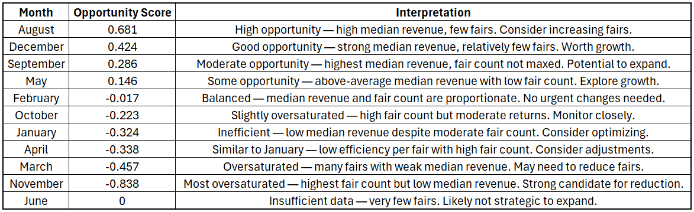

Everglades Wading Bird Foraging & Nesting Trends

Project Overview
In this project, I analyzed over 30 years of nesting data to investigate long-term trends in wood stork and roseate spoonbill populations across the Greater Everglades Ecosystem. Partnering with agencies including Everglades National Park, South Florida Water Management District, Audubon Florida, and the University of Florida, I compiled and cleaned data from multiple sources to assess how nest counts and locations have changed over time.
Using statistical modeling and spatial analysis in RStudio and GIS, I examined the influence of hydrologic change and restoration efforts on nesting behavior and distribution. The results shed light on how these indicator species are responding to shifting environmental conditions and help predict how future restoration may shape their recovery.
Background
Roseate Spoonbills and Wood Storks historically nested along the coastlines of Everglades National Park and Florida Bay, relying on seasonal hydrology to support predictable foraging conditions. However, urbanization and disrupted freshwater flows have pushed both species inland over recent decades, signaling major ecological shifts in the Everglades.
With large-scale restoration efforts underway since the early 2000s to reestablish more natural water patterns, this study examines whether nesting and foraging trends in these indicator species reflect a return to historical coastal use. Understanding how and where these birds are responding helps evaluate the effectiveness of restoration in rebalancing ecosystem function across the Greater Everglades.
The primary objective of this study was to evaluate long-term nesting and foraging trends of Roseate Spoonbills and Wood Storks in the Greater Everglades to better understand how restoration efforts are influencing their behavior and habitat use. Specifically, the analysis aimed to:
- Identify how nesting locations and counts have shifted over the past 30 years
- Assess changes in foraging distribution across time and space
- Determine the key hydrologic drivers of coastal nesting trends, including recession rates, hydroperiod, depth at the start of the nesting season, and rainfall in both the current and antecedent years
- Evaluate whether restoration initiatives are contributing to a return to historic coastal nesting behavior
These findings help assess the effectiveness of restoration strategies and inform future ecological management decisions.
Results Summary
Revenue Efficiency Analysis
Analysis of historical data revealed that August and December presented the highest opportunity scores, indicating that these months yielded disproportionately high median revenue per fair despite hosting fewer events. This suggests strong potential for reallocating or increasing resources during these months to improve overall efficiency and return on investment.


Book Fair Projections & Trends
Projections for the next five years suggest continued business growth, with both fair count and revenue expected to increase annually. A linear regression analysis showed an average increase of $2,483 in total annual revenue for every additional fair held in a year.
Extrapolating from the 10-year historical growth rate, the number of fairs is projected to rise by 72%, while overall revenue is expected to grow by 48%. These projections offer valuable insight into future scaling, helping inform planning around staffing, inventory, and budgeting needs as the company continues to expand.

Geographic Insights
Analysis of total revenue by state revealed that 91% of all revenue was generated by just the top five states, with Florida leading by a substantial margin. The pie chart below highlights this concentration, with the top five states displayed individually and all other states grouped together.
This graphic suggests GNBF should prioritize strategic expansion into underrepresented regions by leveraging proven strategies, building local partnerships, and targeting high-potential markets to diversify revenue and reduce regional dependency.